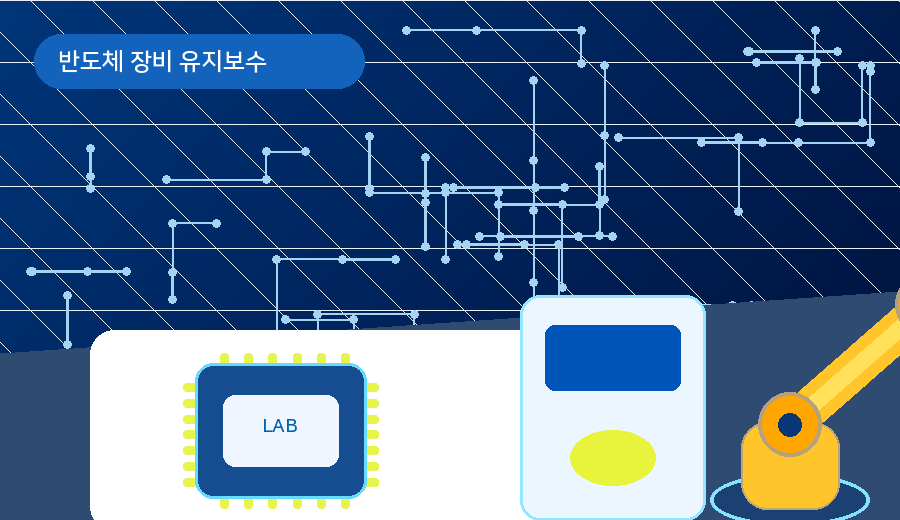
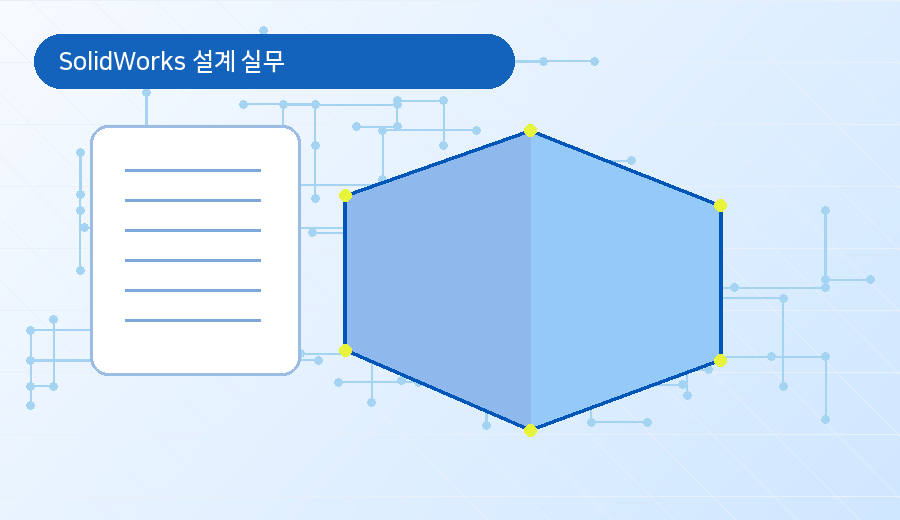

교육과정과 관련 직무를 연결해 학생이 교육 선택 이유를 쉽게 이해하도록 구성합니다.
교육 상세 페이지 아래에 관련 직무를 함께 배치하면 학생들이 과정 선택의 이유를 쉽게 이해할 수 있습니다.
교육과 직무를 따로 보이지 않고 같은 흐름 안에서 연결합니다.
자동화 제어, 설비 제어, 생산장비 유지보수와 연결됩니다.

반도체 장비 엔지니어, 설비 보전, FSE 직무와 연결됩니다.

기구 설계 보조, 장비 부품 설계, 도면 작성 업무와 연결됩니다.